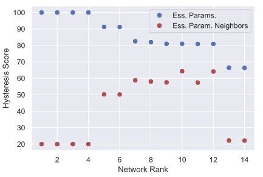
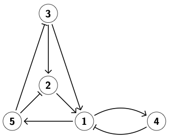
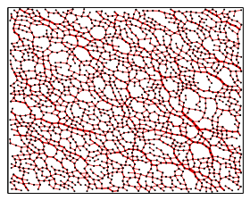
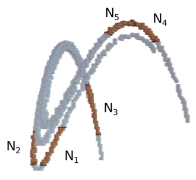
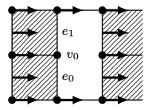
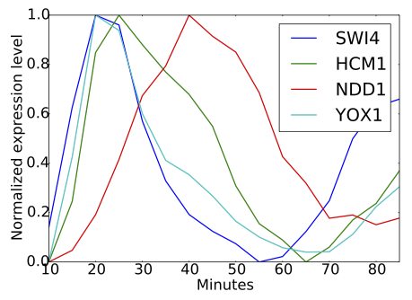
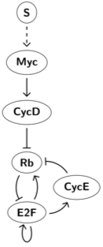
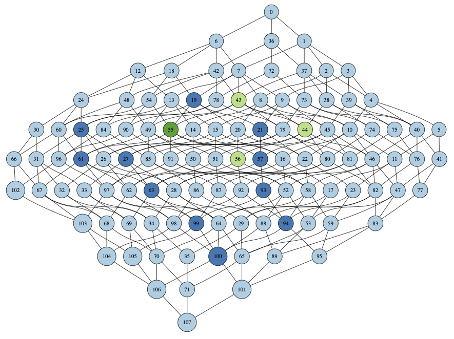
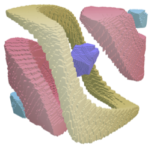

|  |
Rational design of complex phenotype via network modelsPreprint (2020) Marcio Gameiro, Tomas Gedeon, Shane Kepley, Konstantin Mischaikow PDF · DOI Abstract: We demonstrate a modeling and computational framework that allows for rapid screening of thousands of potential network designs for particular dynamic behavior. To illustrate this capability we consider the problem of hysteresis, a prerequisite for construction of robust bistable switches and hence a cornerstone for construction of more complex synthetic circuits. We evaluate and rank all three node networks according to their ability to robustly exhibit hysteresis. Focusing on the highest ranked networks, we demonstrate how additional robustness and design constraints can be applied. We compare our results to more traditional methods based on specific parameterization of ordinary differential equation models and demonstrate a strong qualitative match at a small fraction of the computational cost. |
|  |
Computing linear extensions for Boolean lattices with algebraic constraintsPreprint (2020) Shane Kepley, Konstantin Mischaikow, Lun Zhang PDF · DOI Abstract: In this paper we consider the classical problem of computing linear extensions of a given poset which is well known to be a difficult problem. However, in our setting the elements of the poset are multi-variate polynomials, and only a small "admissible" subset of these linear extensions, determined implicitly by the evaluation map, are of interest. This seemingly novel problem arises in the study of global dynamics of gene regulatory networks in which case the poset is a Boolean lattice. We provide an algorithm for solving this problem using linear programming for arbitrary partial orders of linear polynomials. This algorithm exploits this additional algebraic structure inherited from the polynomials to efficiently compute the admissible linear extensions. The biologically relevant problem involves multi-linear polynomials and we provide a construction for embedding it into an instance of the linear problem. |
|  |
Interaction network analysis in shear thickening suspensionsMarcio Gameiro, Abhinendra Singh, Lou Kondic, Konstantin Mischaikow, Jeffrey F. Morris Phys. Rev. Fluids 5, 034307 (2020) Abstract: Dense frictional particulate suspensions in a viscous liquid undergo increasingly strong continuous shear thickening as the solid packing fraction, ϕ, increases above a critical volume fraction, and discontinuous shear thickening is observed for even higher packing fractions. Recent studies have related shear thickening to a transition from mostly lubricated to predominantly frictional contacts with the increase in stress, with the transition determined by overcoming a repulsive force. The rheology and networks of frictional forces from two- and three-dimensional simulations of shear-thickening suspensions are studied. These are analyzed using measures of the topology of the network, including tools of persistent homology. We observe that at low stress, the frictional interaction networks are predominantly quasilinear along the compression axis. With an increase in stress, the force networks become more isotropic, forming loops in addition to chainlike structures. The topological measures of Betti numbers and total persistence provide a compact means of describing the mean properties of the frictional force networks, and provide a link between macroscopic rheology and the microscopic interactions. A total persistence measure describing the significance of loops in the force network structure, as a function of stress and packing fraction, shows behavior similar to that of relative viscosity, and displays a scaling law near the jamming fraction for both two- and three-dimensional systems considered. The total persistence measures for both dimensions are found to be very similar. |
|  |
Conley Index Approach to Sampled DynamicsSIAM J. Appl. Dyn. Syst., 19(1), 665–704 (2020) Bogdan Batko, Konstantin Mischaikow, Marian Mrozek, Mateusz Przybylski Abstract: The topological method for the reconstruction of dynamics from time series [K. Mischaikow et al., Phys. Rev. Lett., 82 (1999), pp. 1144--1147] is reshaped to improve its range of applicability, particularly in the presence of sparse data and strong expansion. The improvement is based on a multivalued map representation of the data. However, unlike the previous approach, it is not required that the representation has a continuous selector. Instead of a selector, a recently developed new version of Conley index theory for multivalued maps [B. Batko, SIAM J. Appl. Dyn. Syst., 16 (2017), pp. 1587--1617; B. Batko and M. Mrozek, SIAM J. Appl. Dyn. Syst., 15 (2016), pp. 1143--1162] is used in computations. The existence of a continuous, single valued generator of the relevant dynamics is guaranteed in the vicinity of the graph of the multivalued map constructed from data. Some numerical examples based on time series derived from the iteration of Hénon-type maps are presented. |
|  |
A Computational Framework for Connection Matrix TheoryShaun Harker, Konstantin Mischaikow, Kelly Spendlove Preprint (2019) PDF · DOI Abstract: The connection matrix is a powerful algebraic topological tool from Conley index theory, a subfield of topological dynamics. Conley index theory is a purely topological generalization of Morse theory in which the connection matrix subsumes the role of the Morse boundary operator. Over the last few decades, Conley’s approach to dynamics has been cast into a purely computational form. In this paper we introduce a computational and categorical framework for connection matrix theory. Broadly speaking, this contribution promotes the computational Conley theory to a computational, homological theory for dynamical systems. More specifically, within this paper we have three specific aims: 1. We cast connection matrix theory in an appropriate categorical, homotopy- theoretic language. We demonstrate the relationship to the previous definitions of connection matrix. Lastly, the homotopy-theoretic language allows us to formulate connection matrix theory categorically. 2. We describe an algorithm for the computation of connection matrices based on algebraic-discrete Morse theory and formalized with the notion of reductions. We advertise an open-source implementation of our algorithm. 3. We show that the connection matrix can be used to compute persistent homology. Ultimately, we believe that connection matrix theory has the potential to be an important tool within topological data analysis. |
|  |
Model Rejection and Parameter Reduction via Time SeriesBree Cummins, Tomas Gedeon, Shaun Harker, Konstantin Mischaikow SIAM J. Appl. Dyn. Syst., 17(2), 1589–1616 (2018) Abstract: We show how a graph algorithm for finding matching labeled paths in pairs of labeled directed graphs can be used to perform model invalidation for a class of dynamical systems including regulatory network models of relevance to systems biology. In particular, given a partial order of events describing local minima and local maxima of observed quantities from experimental time series data, we produce a labeled directed graph we call the pattern graph for which every path from root to leaf corresponds to a plausible sequence of events. We then consider the regulatory network model, which can itself be rendered into a labeled directed graph we call the search graph via techniques previously developed in computational dynamics. Labels on the pattern graph correspond to experimentally observed events, while labels on the search graph correspond to mathematical facts about the model. We give a theoretical guarantee that failing to find a match invalidates the model. As an application we consider gene regulatory models for the yeast S. cerevisiae. |
|  |
Identifying robust hysteresis in networksPLoS Comput Biol 14(4): e1006121 (2018) Tomas Gedeon, Bree Cummins, Shaun Harker, Konstantin Mischaikow Abstract: We present a new modeling and computational tool that computes rigorous summaries of network dynamics over large sets of parameter values. These summaries, organized in a database, can be searched for observed dynamics, e.g., bistability and hysteresis, to discover parameter regimes over which they are supported. We illustrate our approach on several networks underlying the restriction point of the cell cycle in humans and yeast. We rank networks by how robustly they support hysteresis, which is the observed phenotype. We find that the best 6-node human network and the yeast network share similar topology and robustness of hysteresis, in spite of having no homology between the corresponding nodes of the network. Our approach provides a new tool linking network structure and dynamics. |
|  |
Combinatorial Representation of Parameter Space for Switching NetworksBree Cummins, Tomas Gedeon, Shaun Harker, Konstantin Mischaikow, Kafung Mok SIAM J. Appl. Dyn. Syst., 15(4), 2176–2212 (2016) Abstract: We describe the theoretical and computational framework for the Dynamic Signatures Generated by Regulatory Networks (DSGRN) database. The motivation stems from an urgent need to understand the global dynamics of biologically relevant signal transduction/gene regulatory networks that have at least 5 to 10 nodes, involve multiple interactions, and have decades of parameters. The input to the database computations is a regulatory network, i.e., a directed graph with edges indicating up or down regulation. A computational model based on switching networks is generated from the regulatory network. The phase space dimension of this model equals the number of nodes and the associated parameter space consists of one parameter for each node (a decay rate) and three parameters for each edge (low level of expression, high level of expression, and threshold at which expression levels change). Since the nonlinearities of switching systems are piecewise constant, there is a natural decomposition of phase space into cells from which the dynamics can be described combinatorially in terms of a state transition graph. This in turn leads to a compact representation of the global dynamics called an annotated Morse graph that identifies recurrent and nonrecurrent dynamics. The focus of this paper is on the construction of a natural computable finite decomposition of parameter space into domains where the annotated Morse graph description of dynamics is constant. We use this decomposition to construct an SQL database that can be effectively searched for dynamical signatures such as bistability, stable or unstable oscillations, and stable equilibria. We include two simple 3-node networks to provide small explicit examples of the type of information stored in the DSGRN database. To demonstrate the computational capabilities of this system we consider a simple network associated with p53 that involves 5 nodes and a 29-dimensional parameter space. |
|  |
Combinatorial-topological framework for the analysis of global dynamicsJustin Bush, Marcio Gameiro, Shaun Harker, Hiroshi Kokubu, Konstantin Mischaikow, Ippei Obayashi, Paweł Pilarczyk Chaos 22, 047508 (2012) Abstract: We discuss an algorithmic framework based on efficient graph algorithms and algebraic-topological computational tools. The framework is aimed at automatic computation of a database of global dynamics of a given m-parameter semidynamical system with discrete time on a bounded subset of the n-dimensional phase space. We introduce the mathematical background, which is based upon Conley's topological approach to dynamics, describe the algorithms for the analysis of the dynamics using rectangular grids both in phase space and parameter space, and show two sample applications. |